Crafting distinctive brand identities and editorial systems. Here is an in-depth look at my strategic process from conceptual sketching to premium production
User Understanding : I conduct research to develop a deeper understanding of your users.
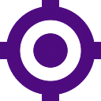
Identify The Core Problem : Combine all my research and observe where your problems exist
Brainstorm Solutions : Generate a range of crazy creative ideas
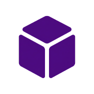
Create A Test Version : Build real tactile representations for a range of my ideas
Gather Feedback And Improve : Return to you for feedback
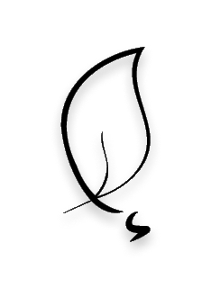
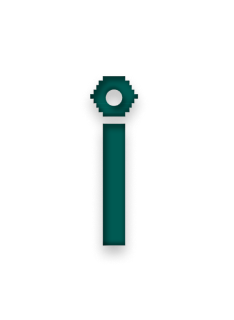
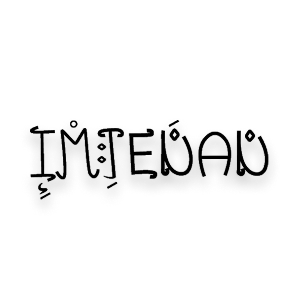
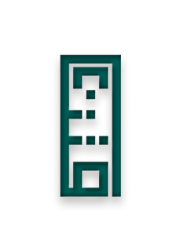
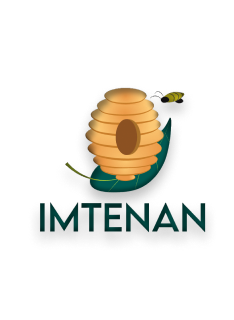
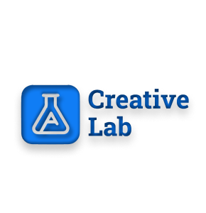
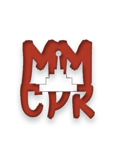
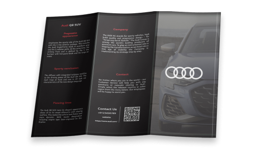
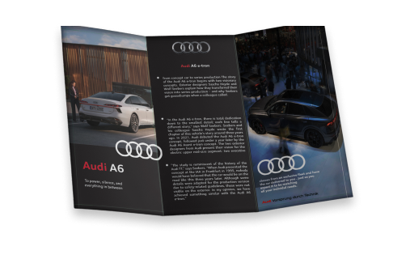
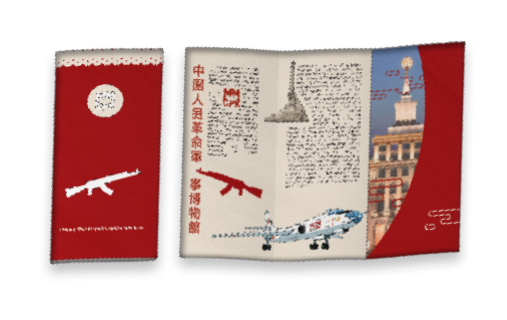
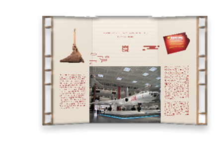